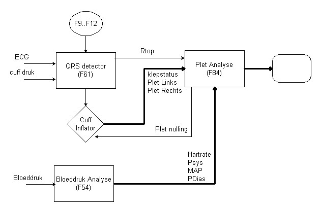

(ff2) Perifere Flow m.b.v. Plethysmografie (F84)
MIDAC Index
Overzicht Rekenfuncties
TestOrganizer
Deze funktie vormt de vervanging voor funktie 4.
Omschrijving
Deze funktie berekent de perifere bloedflow op basis van een plethysmograaf signaal.
Hoewel de berekening identiek is gebleven aan funktie 4, is met name het praktisch gebruik door de interactieve grafische interface sterk verbeterd. Daarnaast is extra aandacht besteed aan GLP, dwz men kan altijd zien of een waarde met de hand gecorrigeerd is, doordat de automatisch berekende computerwaarden er altijd naast blijven staan.
Het plethysmograaf signaal wordt verkregen uit meting aan een extremiteit, welke met een cuff (al dan niet ECG getriggerd, zie ook rekenfunktie 61 voorheen rekenfunktie 1) net onder de systolische bloeddruk wordt afgesloten. De toename van de omvang van de extremiteit, gemeten met een plethysmograaf, is een maat voor de toename van het bloedvolume in de extremiteit. De afgeleide van dit plethysmograaf signaal is een maat voor de bloedflow. De afgeleide wordt bepaald m.b.v. een lineaire regressie op basis van de kleinste kwadraten fout.
Deze funktie kan het beset gebruikt worden in combinatie met funktie 61 (QRS-detector) en eventueel funktie 54 (Bloeddruk analyse), zoals in onderstaande figuur is aangegeven.

De funktie berekent simultaan de helingshoek van linker en rechter arm, en bij iedere arm over 4 (door de gebruiker in te stellen) perioden. Alleen de berekning over de eerste periode wordt grafisch weergegeven, zoals hier onder getoond.
We zien in de bovenste grafiek het plet signaal van de linker arm (blauwe curve) en in de onderste grafiek het plet signaal van de rechter arm (blauwe signaal). De kleuren zijn uiteraard door de gebuiker in te stellen.
In de bovenste grafiek zien we ook het klepsignaal (groene signaal), waaruit is te zien dat de analyse start 1 seconde na het opblazen van de cuffs.
In beide grafieken is een basislijn getekend (zwarte lijn). Deze basislijn staat altijd op een vaste waarde en de plet-signalen altijd zodanig in verticale richting verschoven dat het gemiddelde van het plet signaal, in de periode 1 seconde voor het opblazen van de cuffs, op de basislijn staat.
De paarse lijn geeft de door de computer berekende helling weer. Ook het beginpunt en het eindpunt komen overeen met de opgegeven meet-periode. De paarse lijn is voorzien van kleine dipjes naar beneden, die als seconde indicator dienen. De schuine paarse lijn is iets naar beneden geschoven getekend (maar wel evenwijdig), teneinde de rode lijn goed zichtbaar te maken.
De rode lijn is in eerste instantie gelijk aan de paarse lijn, oftewel de door de computer berekende lijn. De rode lijn is echter voorzien van anker punten aan het begin, midden en einde, die dienen om de lijn met de muis in gewenste richting te verplaaten (zie hieronder handcorrectie).
Tenslotte, onder de grafieken staat nog een commentaar regel, die bij iedere trial afzonderlijk wordt bewaard.
Onderaan het plaatje staan alle trial-nummers vermeld.
Het actieve trialnummer is gehighlight, in dit geval 34.
Trials die verworpen zijn, zijn rood gekleurd, zoals 3 in bovenstaande figuur.
De trials die handmatig gecorrigeerd zijn, zijn groen geleurd, zoals 19.
|
|
Aan de linkerkant zien we de berekende waarden van de helling over de 4 perioden.
Het label boven de meetwaarde geeft de periode aan.
Dus bijvoorbeeld de bovenste waarde in het linker plaatje is berekend
startend 1 seconde na het openen van de klep en gedurende 6 seconden.
|
|
|
Tevens zien we hier de 4 extra signalen.
De namen van de labels zijn in te stellen op het instellingen blad.
Deze getallen zijn het gemiddelde van het betreffende signaal, berekend over dezelfde period als waarover de eerste helling is berekend.
|
|
Rechts bovenaan, vinden we de versterkersknoppen.
Hiermee kan worden ingezoomd op de signalen.
Daarnaast kan ook de verhouding tussen de grafiek van de linker en de rechter arm worden ingesteld, door het verslepen van de blauwe horizontale lijn.
|

|
|
Met het klembord knopje, wordt het gehele functie venster als grafische afbeelding naar het cilpboard gekopieerd en kan vervolgens via plakken in ieder willekeurig document worden geplaatst.
Met het vraagteken, wordt het help bestand van deze funktie geopend in de default browser.
De knop export, exporteert alle resultaten naar een tab-delimited ASCII-file (zie hierna).
Het slotje en het groene mannetje dienen voor de handcorrectie, zie hierna.
Met de rode pijlen kan naar de vorige / volgende trial worden gesprongen. Zolang het funktie venster focus heeft, kan hiervoor ook PgUp en PgDn worden gebruikt. Daarnaast kan men op de trial-nummers klikken om een gewenste trial te tonen.
Helemaal onderaan staat nog een reject hokje, door dit aan te vinken wordt de actuele trial verworpen.
|

|
Handcorrectie
In onderstaand voorbeeld is de eerste analyse door de computer uitgevoerd over de periode 1..7 seconden na het opblazen van de cuffs.
Kijkend naar de rechter arm (onderste signaal) is te zien dat er een fors bewegings artefact is geweest, waarna bovendien het kwiktouwtje verschoven is. De door de computer berekende lijn (paarse lijn met spikes) is duidelijk de fout ingegaan als gevolg van het bewegings artefact.
De lijn kan nu eenvoudig visueel worden aangepast, door hem op de juiste plaats te slepen (rode lijn).
Standaard is het slotje rechtsonder gesloten, zodat niet per ongeluk lijnen kunnen worden verplaatst.
- Klik op het slotje, zodat het verplaatsen van de lijn wordt toegestaan
- Nu kunnen de eindpunten van de rode lijn volkomen vrij worden verplaatst, door ze te klikken en terwijl de linkermuis wordt vastgehouden de muis te verplaatsen.
- De lijn kan ook evenwijdig worden verplaatst, door het middelpunt van de lijn te slepen
- De berekende waarden links in beeld worden aangepast zodra de linker muistoets wordt losgelaten.
- Als men tevreden is over het resultaat, kan wederom op het slotje geklikt worden, om de zaak te vergrendelen. (Indien men naar een andere trial springt, wordt het slotje automatisch gesloten).
- Komt men toch tot de conclusie dat men er zelf niets beter van kan maken, kan men voor deze ene trial de berekening door de computer over laten doen, door op het groene mannetje te klikken (werkt alleen terwijl het slot open is).
- Tenslotte bestaat de mogelijkheid om een trial te onderdrukken, door het hokje "reject" aan te kruisen, het betreffende trial nummer wordt dan rood, zoals in trial 3 is te zien.
- Een trial die met de hand is gewijzigd, is te herkennen aan een groen trial nummer (zoals hier in de actieve trial 19 te zien had moeten zijn)
Export
De export kan via het hoofmenu worden gestart, maar ook direct door in het funktie-venster op de export knop te drukken. Daarna verschijnt het standaard export venster, dat normaal gesproken goed zal zijn ingesteld. Vervolgens drukt men op Start en de export file wordt klaargemaakt.

Het beeld tijdens de export:
Als de export file klaar is wordt gevraagd of men de export file direct in een extern programma wil bekijken.
Drukt men op JA, dan wordt de exportfile direct in het externe programma geopend (bv Excel).
De exportfile in Excel:
Om de file te openen, zoekt de TestOrganizer naar het programma dat door windos aan deze fileextensie is gekoppeld. In windows kan dit het gemakkelijkst worden ingesteld door dit type file éénmalig te openen vanuit de verkenner met de gewenste toepassing.
Instellingen Venster
|
Bovenaan staan de instellingen voor de 4 analyses. De eerste analyse is ook de analyse die grafisch wordt weergegeven.
Links onder kunnen de kleuren van de signalen en achtergrond worden ingesteld. Gewoon klikken en een kleur kiezen.
Rechtsonder kunnen de namen voor de extra signalen (ingangs kanalen 5..8) worden ingevoerd. Indien geen naam wordt ingevuld, wordt het signaal ook niet berekend. Belangrijk is te weten dat het ingangssignaal 5 niet automatisch wordt geschaald (dit is bedoeld voor de hartrate) en de overige signalen wel automatisch worden geschaald, op basis van hun ingangssignaal.
Ten slotte midden onder een extra noodmaatregel als er om welke reden dan ook geen klepsignaal beschikbaar is. Men kan dan het opblazen van de cuffs handmatig aangeven door op de juiste plaats markers van het opgegeven type te zetten.
|
|
Ingangs Signalen